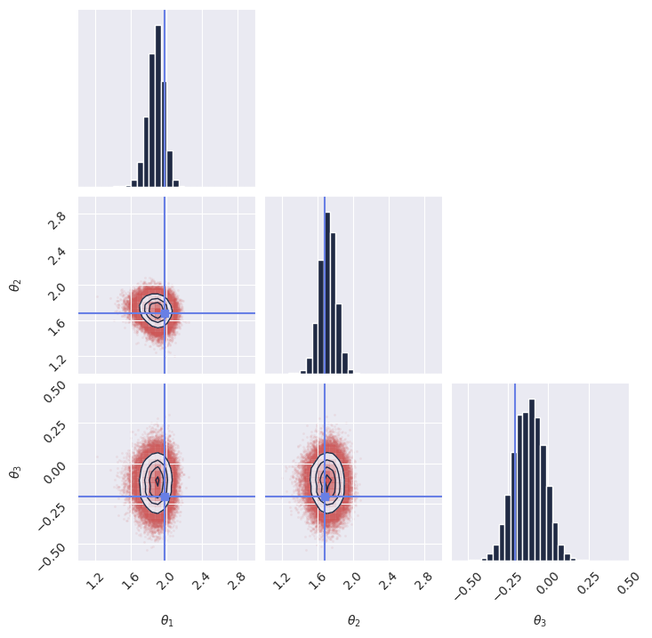

15-minute quick start#
Welcome to GenSBI! This page is a quick guide to get you started with installation and basic usage.
Installation#
Using uv (recommended):
uv add gensbi
# or, for a standalone install:
uv pip install gensbi
Or using pip:
pip install gensbi
If a GPU is available, it is advisable to install the CUDA version of the package:
uv add gensbi[cuda12]
# or
pip install gensbi[cuda12]
See the Installation Guide for more options, including how to install the examples.
Requirements#
Python 3.11+
JAX
Flax
(See
pyproject.tomlfor full requirements)
Basic Usage#
To get started fast, use the provided recipes.
Note
The example below is a minimal script designed for copy-pasting by experienced users. If you want a step-by-step educational walkthrough that explains the concepts, please see the My First Model Tutorial.
Here is a minimal example of setting up a flow-based conditional inference pipeline using Flux1.
This example covers:
Data Generation: Creating synthetic data for a simple linear problem.
Model Configuration: Setting up the
Flux1parameters.Pipeline Creation: Initializing the
Flux1FlowPipelinewhich handles training and sampling.Training: Running the training loop.
Inference: Sampling from the posterior given new observation.
The code below is a complete, runnable script:
1# %% Imports
2import os
3
4# Set JAX backend (use 'cuda' for GPU, 'cpu' otherwise)
5# os.environ["JAX_PLATFORMS"] = "cuda"
6
7import grain
8import numpy as np
9import jax
10from jax import numpy as jnp
11from numpyro import distributions as dist
12from flax import nnx
13
14from gensbi.recipes import Flux1FlowPipeline
15from gensbi.models import Flux1, Flux1Params
16
17from gensbi.utils.plotting import plot_marginals
18import matplotlib.pyplot as plt
19
20
21# %%
22
23theta_prior = dist.Uniform(
24 low=jnp.array([-2.0, -2.0, -2.0]), high=jnp.array([2.0, 2.0, 2.0])
25)
26
27dim_obs = 3
28dim_cond = 3
29dim_joint = dim_obs + dim_cond
30
31
32# %%
33def simulator(key, nsamples):
34 theta_key, sample_key = jax.random.split(key, 2)
35 thetas = theta_prior.sample(theta_key, (nsamples,))
36
37 xs = thetas + 1 + jax.random.normal(sample_key, thetas.shape) * 0.1
38
39 thetas = thetas[..., None]
40 xs = xs[..., None]
41
42 # when making a dataset for the joint pipeline, thetas need to come first
43 data = jnp.concatenate([thetas, xs], axis=1)
44
45 return data
46
47
48# %% Define your training and validation datasets.
49# We generate a training dataset and a validation dataset using the simulator.
50# The simulator is a simple function that generates parameters (theta) and data (x).
51# In this example, we use a simple Gaussian simulator.
52train_data = simulator(jax.random.PRNGKey(0), 100_000)
53val_data = simulator(jax.random.PRNGKey(1), 2000)
54
55
56# %% Normalize the dataset
57# It is important to normalize the data to have zero mean and unit variance.
58# This helps the model training process.
59means = jnp.mean(train_data, axis=0)
60stds = jnp.std(train_data, axis=0)
61
62
63def normalize(data, means, stds):
64 return (data - means) / stds
65
66
67def unnormalize(data, means, stds):
68 return data * stds + means
69
70
71# %% Prepare the data for the pipeline
72# The pipeline expects the data to be split into observations and conditions.
73# We also apply normalization at this stage.
74def split_obs_cond(data):
75 data = normalize(data, means, stds)
76 return (
77 data[:, :dim_obs],
78 data[:, dim_obs:],
79 ) # assuming first dim_obs are obs, last dim_cond are cond
80
81
82# %%
83
84# %% Create the input pipeline using Grain
85# We use Grain to create an efficient input pipeline.
86# This involves shuffling, repeating for multiple epochs, and batching the data.
87# We also map the split_obs_cond function to prepare the data for the model.
88batch_size = 256
89
90train_dataset_grain = (
91 grain.MapDataset.source(np.array(train_data))
92 .shuffle(42)
93 .repeat()
94 .to_iter_dataset()
95 .batch(batch_size)
96 .map(split_obs_cond)
97 # .mp_prefetch() # Uncomment if you want to use multiprocessing prefetching
98)
99
100val_dataset_grain = (
101 grain.MapDataset.source(np.array(val_data))
102 .shuffle(42)
103 .repeat()
104 .to_iter_dataset()
105 .batch(batch_size)
106 .map(split_obs_cond)
107 # .mp_prefetch() # Uncomment if you want to use multiprocessing prefetching
108)
109
110# %% Define your model
111# specific model parameters are defined here.
112# For Flux1, we need to specify dimensions, embedding strategies, and other architecture details.
113params = Flux1Params(
114 in_channels=1,
115 vec_in_dim=None,
116 context_in_dim=1,
117 mlp_ratio=3,
118 num_heads=2,
119 depth=4,
120 depth_single_blocks=8,
121 axes_dim=[
122 10,
123 ],
124 qkv_bias=True,
125 dim_obs=dim_obs,
126 dim_cond=dim_cond,
127 theta=10 * dim_joint,
128 id_embedding_strategy=("absolute", "absolute"),
129 rngs=nnx.Rngs(default=42),
130 param_dtype=jnp.float32,
131)
132
133
134# %% Instantiate the pipeline
135# The Flux1FlowPipeline handles the training loop and sampling.
136# We configure it with the model parameters, datasets, dimensions using a default training configuration.
137training_config = Flux1FlowPipeline.get_default_training_config()
138training_config["nsteps"] = 10000
139
140pipeline = Flux1FlowPipeline(
141 train_dataset_grain,
142 val_dataset_grain,
143 dim_obs,
144 dim_cond,
145 params=params,
146 training_config=training_config,
147)
148
149# %% Train the model
150# We create a random key for training and start the training process.
151rngs = nnx.Rngs(42)
152pipeline.train(
153 rngs, save_model=False
154) # if you want to save the model, set save_model=True
155
156# %% Sample from the posterior
157# To generate samples, we first need an observation (and its corresponding condition).
158# We generate a new sample from the simulator, normalize it, and extract the condition x_o.
159
160new_sample = simulator(jax.random.PRNGKey(20), 1)
161true_theta = new_sample[:, :dim_obs, :] # extract observation from the joint sample
162
163new_sample = normalize(new_sample, means, stds)
164x_o = new_sample[:, dim_obs:, :] # extract condition from the joint sample
165
166# Then we invoke the pipeline's sample method.
167samples = pipeline.sample(rngs.sample(), x_o, nsamples=100_000)
168# Finally, we unnormalize the samples to get them back to the original scale.
169samples = unnormalize(samples, means[:dim_obs], stds[:dim_obs])
170
171# %% Plot the samples
172# We verify the model's performance by plotting the marginal distributions of the generated samples
173# against the true parameters.
174plot_marginals(
175 np.array(samples[..., 0]),
176 gridsize=30,
177 true_param=np.array(true_theta[0, :, 0]),
178 range=[(1, 3), (1, 3), (-0.6, 0.5)],
179)
180plt.savefig("flux1_flow_pipeline_marginals.png", dpi=100, bbox_inches="tight")
181plt.show()
182
183# %% Alternative: sample with ZeroEndsSolver (SDE-based flow matching sampler)
184# Instead of the default deterministic ODE solver, you can use the ZeroEndsSolver
185# for stochastic sampling in flow matching. This can sometimes improve sample diversity.
186# The SDE solver requires mu0 (prior mean) and sigma0 (prior std) matching the
187# data shape, plus an alpha parameter controlling diffusion strength.
188from gensbi.flow_matching.solver import ZeroEndsSolver
189
190solver_kwargs = {
191 "mu0": jnp.zeros((dim_obs, 1)), # prior mean (data is normalized)
192 "sigma0": jnp.ones((dim_obs, 1)), # prior std
193 "alpha": 0.2, # diffusion strength
194}
195
196samples_sde = pipeline.sample(
197 rngs.sample(),
198 x_o,
199 nsamples=100_000,
200 solver=(ZeroEndsSolver, solver_kwargs),
201)
202samples_sde = unnormalize(samples_sde, means[:dim_obs], stds[:dim_obs])
203
204plot_marginals(
205 np.array(samples_sde[..., 0]),
206 gridsize=30,
207 true_param=np.array(true_theta[0, :, 0]),
208 range=[(1, 3), (1, 3), (-0.6, 0.5)],
209)
210plt.savefig("flux1_flow_pipeline_sde_marginals.png", dpi=100, bbox_inches="tight")
211plt.show()
212
213# %%
{kind=link}

Note
If you plan on using multiprocessing prefetching, ensure that your script is wrapped
in a if __name__ == "__main__": guard.
See https://docs.python.org/3/library/multiprocessing.html
See the full example notebook my_first_model for a more detailed walkthrough, and the Examples page for practical demonstrations on common SBI benchmarks.
Citing GenSBI#
If you use this library, please consider citing this work and the original methodology papers, see references.
@misc{GenSBI,
author = {Amerio, Aurelio},
title = "{GenSBI: Generative models for Simulation-Based Inference}",
year = {2025},
publisher = {GitHub},
journal = {GitHub repository},
howpublished = {\url{https://github.com/aurelio-amerio/GenSBI}}
}